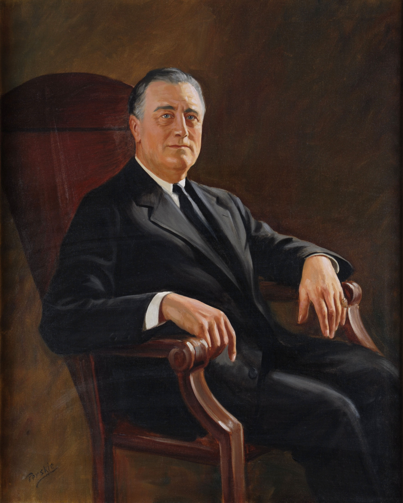

Franklin Delano Roosevelt (January 30, 1882 – April 12, 1945), often referred to by his initials FDR, was an American politician and attorney who served as the 32nd president of the United States from 1933 until his death in 1945. As a member of the Democratic Party, he won a record four presidential elections and became a central figure in world events during the first half of the 20th century. Roosevelt directed the federal government during most of the Great Depression, implementing his New Deal domestic agenda in response to the worst economic crisis in U.S. history. As a dominant leader of his party, he built the New Deal Coalition, which defined modern liberalism in the United States throughout the middle third of the 20th century. His third and fourth terms were dominated by World War II, which ended shortly after he died in office.
Born into the Roosevelt family in Hyde Park, New York, he graduated from both Groton School and Harvard College, and attended Columbia Law School, which he left after passing the bar exam to practice law in New York City. In 1905, he married his fifth cousin once removed, Eleanor Roosevelt. They had six children, of whom five survived into adulthood. He won election to the New York State Senate in 1910, and then served as Assistant Secretary of the Navy under President Woodrow Wilson during World War I. Roosevelt was James M. Cox's running mate on the Democratic Party's 1920 national ticket, but Cox was defeated by Republican Warren G. Harding. In 1921, Roosevelt contracted a paralytic illness, believed at the time to be polio, and his legs became permanently paralyzed. While attempting to recover from his condition, Roosevelt founded a polio rehabilitation center in Warm Springs, Georgia. Although unable to walk unaided, Roosevelt returned to public office after his election as governor of New York in 1928. He served as governor from 1929 to 1933, promoting programs to combat the economic crisis besetting the United States.
In the 1932 presidential election, Roosevelt defeated Republican incumbent Herbert Hoover in a landslide. The Roosevelt presidency began in the midst of the Great Depression and during the first 100 days of the 73rd U.S. Congress, he spearheaded unprecedented federal legislation. He also issued a profusion of executive orders that instituted the New Deal—a variety of programs designed to produce relief, recovery, and reform. He created numerous programs to provide relief to the unemployed and farmers while seeking economic recovery with the National Recovery Administration and other agencies. He also instituted major regulatory reforms related to finance, communications, and labor. In addition to the economy Roosevelt also sought to curtail the rising crime brought about because of Prohibition.[2] After campaigning on a platform to repeal it, Roosevelt implemented the Beer Permit Act and enforced the 21st amendment. He used radio to speak directly to the American people, giving 30 "fireside chat" radio addresses during his presidency and became the first American president to be televised. The economy improved rapidly from 1933 to 1936, and Roosevelt won a landslide reelection in 1936. After the election, he sought passage of the Judicial Procedures Reform Bill of 1937 (or "court packing plan"), intending to expand the size of the Supreme Court. The bill was blocked by the newly formed bipartisan Conservative Coalition which also sought to prevent further New Deal legislation, as a result the economy began to decline which lead to the recession of 1937–1938. Other major 1930s legislation and agencies implemented under Roosevelt include the Securities and Exchange Commission, the National Labor Relations Act, the Federal Deposit Insurance Corporation, Social Security, and the Fair Labor Standards Act.
He was reelected in 1940 for his third term, making him the only U.S. president to serve for more than two terms. By 1939 another World War was on the horizon which prompted the United States to respond by passing a series of laws affirming neutrality and rejecting intervention. Despite this President Roosevelt gave strong diplomatic and financial support to China, the United Kingdom, and eventually the Soviet Union. Following the Japanese attack on Pearl Harbor on December 7, 1941, an event he called "a date which will live in infamy", Roosevelt obtained a congressional declaration of war against Japan. On December 11th Japan's allies, Nazi Germany and Fascist Italy declared war on the United States. In response the US formally joined the Allies and entered the European theater of war. Assisted by his top aide Harry Hopkins and with very strong national support, he worked closely with British Prime Minister Winston Churchill, Soviet General Secretary Joseph Stalin, and Chinese Generalissimo Chiang Kai-shek in leading the Allied Powers against the Axis Powers. Roosevelt supervised the mobilization of the U.S. economy to support the war effort and implemented a Europe first strategy, initiating the Lend-Lease program and making the defeat of Germany first a priority over that of Japan. His administration oversaw the construction of The Pentagon, initiated the development of the world's first atomic bomb, and worked with other Allied leaders to lay the groundwork for the United Nations and other post-war institutions. It was under his wartime leadership that the United States became a superpower on the world stage.
Roosevelt won reelection in the 1944 presidential election on his post-war recovery platform. His physical health began declining during the later war years, and less than three months into his fourth term, Roosevelt died on April 12, 1945. Vice President Harry S. Truman assumed office as president and oversaw the acceptance of surrender by the Axis powers. Some of Roosevelt's actions have faced substantial criticism, such as his ordering of the relocation and internment of Japanese Americans. Nevertheless, he is consistently ranked by scholars, political scientists, and historians as being among the nation's three greatest presidents, alongside George Washington and Abraham Lincoln.